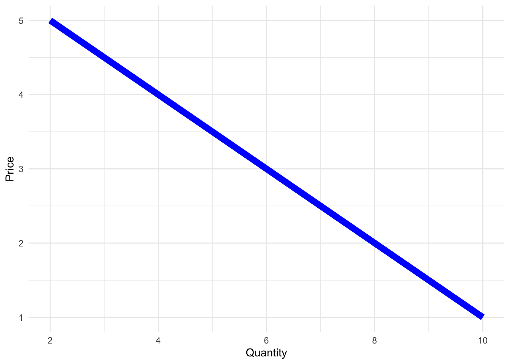
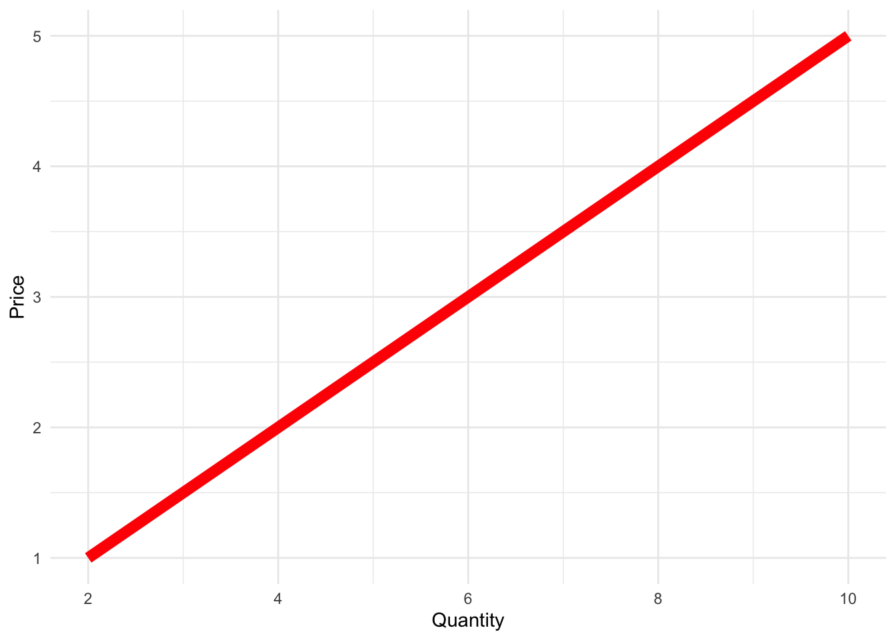
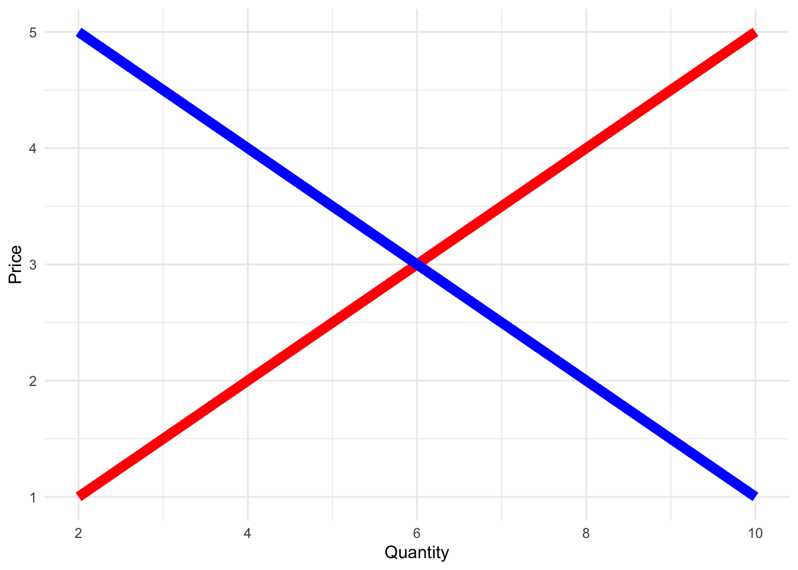

Additional practice problems posted under the ‘Labs’ tab
Foundations
What we will be learning in this course will seem simplistic and reductive to the world we actually observe
Before we jump into Intermediate Microeconomics, we need to refresh our memories of more basic concepts from EC 201:
Demand
Supply
Economic Assumptions
Basics Review
Demand
library(ggplot2)# Create data for demand and supply curvesprice <-c(1, 2, 3, 4, 5)quantity_demanded <-c(10, 8, 6, 4, 2)quantity_supplied <-c(2, 4, 6, 8, 10)df <-data.frame(price, quantity_demanded, quantity_supplied)# Create demand and supply curve plotdemand_plot <-ggplot(df, aes(x = quantity_demanded, y = price)) +geom_line(color ="blue", lwd =3) +labs(x ="Quantity", y ="Price") +theme_minimal() print(demand_plot)

Demand
Demand is the QUANTITY of a good that consumers want at a given PRICE
. . .
The Demand Curve shows the RELATIONSHIP between PRICES and QUANTITY of a good for consumers
. . .
We will make the distinction between Individual Demand and Market Demand
Individual Demand: Single Consumer (One Person)
Market Demand: All potential consumers (Everyone participating in the market)
. . .
Note: The first half of the course will be about demand and how we can find it for individuals and then for an entire market
Demand
Some Factors that can affect demand are:
Number of Consumers
Changes to Income
Consumer Preferences (Tastes)
The Price of Other Goods
Complements
Substitutes
Supply
library(ggplot2)# Create data for demand and supply curvesprice <-c(1, 2, 3, 4, 5)quantity_demanded <-c(10, 8, 6, 4, 2)quantity_supplied <-c(2, 4, 6, 8, 10)df <-data.frame(price, quantity_demanded, quantity_supplied)# Create demand and supply curve plotsupply_plot <-ggplot(df, aes(x = quantity_supplied, y = price)) +geom_line(color ="red", lwd =3) +labs(x ="Quantity", y ="Price") +theme_minimal() print(supply_plot)

Supply
Supply is the QUANTITY of goods available for sale at a given PRICE
. . .
The Supply Curve shows the RELATIONSHIP between PRICES and QUANTITY of a good for producers
. . .
We also make the distinction between Individual Supply and Market Supply
Individual Supply: A Single Producer (One Firm)
Market Supply: All potential producers (All firms that are participating in the market)
. . .
Note: The second half of the course will deal with how producers make their decisions
Supply
Some Factors that may affect supply are:
Production Costs (Cost of Raw Materials, Technology, etc.)
Number of Sellers (Number of firms in the market)
Producers outside options
Supply & Demand
library(ggplot2)# Create data for demand and supply curvesprice <-c(1, 2, 3, 4, 5)quantity_demanded <-c(10, 8, 6, 4, 2)quantity_supplied <-c(2, 4, 6, 8, 10)df <-data.frame(price, quantity_demanded, quantity_supplied)# Create demand and supply curve plotsupply_plot <-ggplot(df, aes(x = quantity_supplied, y = price)) +geom_line(color ="red", lwd =3) +geom_line(aes(x = quantity_demanded, y = price), color ="blue", lwd =3) +labs(x ="Quantity", y ="Price") +theme_minimal() print(supply_plot)

Put together they give us this classic graph
Supply & Demand
Where these two are equal to each other (where they cross) we say it is the market equilibrium
The third part of the course will be about variations to the classic market equilibrium
What happens when the market is deep (has many producers) (Perfect Competition)
What happens when the market is shallow (only one producer) (Monopoly)
What about other forms of competition where firms have some market power but not total market control? (Imperfect Competition)
Models
We can use all these to make very complex models of what we think the world looks like
But to begin, we need to develop the basics of:
What does Demand look like?
What does Supply look like?
What form of Competition are we in?
Once we put all of these together we are modeling a market. With a model, you can begin to analyze the effects of changes to Model Inputs on Model Outputs
Assumptions
We will work with models you have seen before and some new ones that are classified as “classical economics”
. . .
These require certain assumptions in order to simplify the results:
Assume that individuals are Rational and Self-Interested
Assume that markets have No Externalities and Asymmetric Information
Assumptions
These assumptions help make things simple and work to set a benchmark of sorts
They are often good approximations of the real world but are often not exact
We use these fundamental pieces of classical economics and build on top of them
Note: I’m not attempting to describe the way the world works exactly, but rather give you a strating point for future endeavors
Last Tool You Will Need
We will need calculus
It turns out that intermediate micro is fundamentally inseparable from multi-variate calculus
. . .
I cannot show you where a demand curve comes from without using (a tiny bit) of calculus
So the second thing we will do is discuss the math you will need in order to follow the material